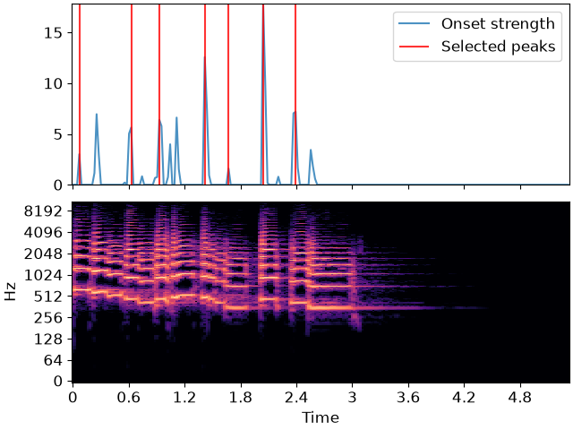

librosa.util.peak_pick
- librosa.util.peak_pick(x, *, pre_max, post_max, pre_avg, post_avg, delta, wait, sparse=True, axis=-1)[source]
Use a flexible heuristic to pick peaks in a signal.
A sample n is selected as an peak if the corresponding
x[n]fulfills the following three conditions:x[n] == max(x[n - pre_max:n + post_max])x[n] >= mean(x[n - pre_avg:n + post_avg]) + deltan - previous_n > wait
where
previous_nis the last sample picked as a peak (greedily).This implementation is based on [1] and [2].
- Parameters:
- xnp.ndarray
input signal to peak picks from
- pre_maxint >= 0 [scalar]
number of samples before
nover which max is computed- post_maxint >= 1 [scalar]
number of samples after
nover which max is computed- pre_avgint >= 0 [scalar]
number of samples before
nover which mean is computed- post_avgint >= 1 [scalar]
number of samples after
nover which mean is computed- deltafloat >= 0 [scalar]
threshold offset for mean
- waitint >= 0 [scalar]
number of samples to wait after picking a peak
- sparsebool [scalar]
If True, the output are indices of detected peaks. If False, the output is a dense boolean array of the same shape as
x.- axisint [scalar]
the axis over which to detect peaks.
- Returns:
- peaksnp.ndarray [shape=(n_peaks,) or shape=x.shape, dtype=int or bool]
indices of peaks in
x(sparse=True) or a boolean array where peaks[…, n] indicates a peak at frame index n (sparse=False)
- Raises:
- ParameterError
If any input lies outside its defined range
Examples
>>> y, sr = librosa.load(librosa.ex('trumpet')) >>> onset_env = librosa.onset.onset_strength(y=y, sr=sr, ... hop_length=512, ... aggregate=np.median) >>> peaks = librosa.util.peak_pick(onset_env, pre_max=3, post_max=3, pre_avg=3, post_avg=5, delta=0.5, wait=10) >>> peaks array([ 3, 27, 40, 61, 72, 88, 103])
Using dense output to make a boolean array of peak indicators >>> librosa.util.peak_pick(onset_env, pre_max=3, post_max=3, pre_avg=3, post_avg=5, … delta=0.5, wait=10, sparse=False) array([False, False, …, False, False])
>>> import matplotlib.pyplot as plt >>> times = librosa.times_like(onset_env, sr=sr, hop_length=512) >>> fig, ax = plt.subplots(nrows=2, sharex=True) >>> D = np.abs(librosa.stft(y)) >>> librosa.display.specshow(librosa.amplitude_to_db(D, ref=np.max), ... y_axis='log', x_axis='time', ax=ax[1]) >>> ax[0].plot(times, onset_env, alpha=0.8, label='Onset strength') >>> ax[0].vlines(times[peaks], 0, ... onset_env.max(), color='r', alpha=0.8, ... label='Selected peaks') >>> ax[0].legend(frameon=True, framealpha=0.8) >>> ax[0].label_outer()
